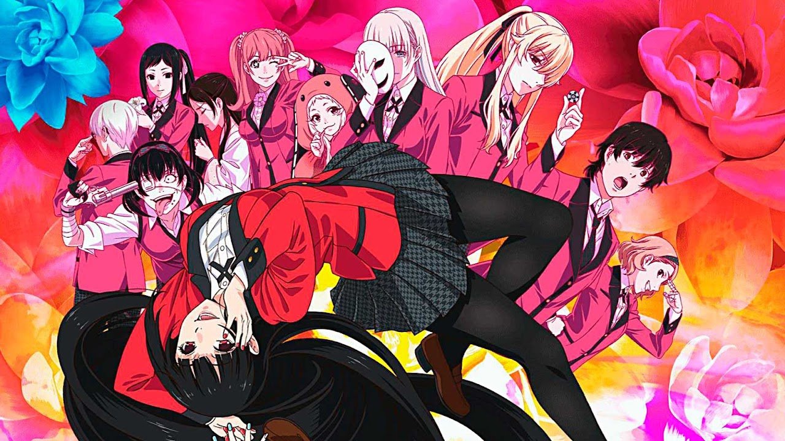

Best Anime TV
12. Attack On Titan
Centuries ago, mankind was slaughtered to near extinction by monstrous humanoid creatures called Titans, forcing humans to hide in fear behind enormous concentric walls. What makes these giants truly terrifying is that their taste for human flesh is not born out of hunger but what appears to be out of pleasure.
To ensure their survival, the remnants of humanity began living within defensive barriers, resulting in one hundred years without a single titan encounter. However, that fragile calm is soon shattered when a colossal Titan manages to breach the supposedly impregnable outer wall, reigniting the fight for survival against the man-eating abominations.
more
Episodes: 25
Status: Finished Airing
Aired: Apr 7, 2013 to Sep 29, 2013
Genres: Action, Award Winning, Drama, Suspense
Themes: Gore, Military, Survival
11. Death Note
Brutal murders, petty thefts, and senseless violence pollute the human world. In contrast, the realm of death gods is a humdrum, unchanging gambling den. The ingenious 17-year-old Japanese student Light Yagami and sadistic god of death Ryuk share one belief: their worlds are rotten.
For his own amusement, Ryuk drops his Death Note into the human world. Light stumbles upon it, deeming the first of its rules ridiculous: the human whose name is written in this note shall die. However, the temptation is too great, and Light experiments by writing a felon's name, which disturbingly enacts his first murder.
more
Episodes: 37
Status: Finished Airing
Aired: Oct 4, 2006 to Jun 27, 2007
Genres: Supernatural, Suspense
Themes: Detective, Psychological
10. One Punch Man

The seemingly unimpressive Saitama has a rather unique hobby: being a hero. In order to pursue his childhood dream, Saitama relentlessly trained for three years, losing all of his hair in the process. Now, Saitama is so powerful, he can defeat any enemy with just one punch. However, having no one capable of matching his strength has led Saitama to an unexpected problem—he is no longer able to enjoy the thrill of battling and has become quite bored.
more
Episodes: 12
Status: Finished Airing
Aired: Oct 5, 2015 to Dec 21, 2015
Genres: Action, Comedy
Themes: Adult Cast, Parody, Super Power
9. Spy x Family

In the bustling Ostanian city of Berlint, Twilight dons the alias of "Loid Forger," an esteemed psychiatrist. However, his true intention is to gather intelligence on prominent politician Donovan Desmond, who only appears rarely in public at his sons' school: the prestigious Eden Academy. Enlisting the help of unmarried city hall clerk Yor Briar to act as his wife and adopting the curious six-year-old orphan Anya as his daughter, Loid enacts his master plan. He will enroll Anya in Eden Academy, where Loid hopes she will excel and give him the opportunity to meet Donovan without arousing suspicion.
more
Episodes: 12
Status: Finished Airing
Aired: Apr 9, 2022 to Jun 25, 2022
Genres: Action, Award Winning, Comedy
Theme: Childcare
8. Tokyo Revenger

Takemichi Hanagaki's second year of middle school was the highest point in his life. He had respect, a gang of friends he could count on, and even a girlfriend. But that was twelve years ago. Today, he's a nobody: a washed-up nonentity made fun of by children and always forced to apologize to his younger boss. A sudden news report on the Tokyo Manji Gang's cruel murder of the only girlfriend he ever had alongside her brother only adds insult to injury. Half a second before a train ends his pitiful life for good, Takemichi flashes back to that same day 12 years ago, when he was still dating Hinata Tachibana.
more
Episodes: 24
Status: Finished Airing
Aired: Apr 11, 2021 to Sep 19, 2021
Genres: Action, Drama, Supernatural
Themes: Delinquents, Time Travel
7. Naruto
Moments prior to Naruto Uzumaki's birth, a huge demon known as the Kyuubi, the Nine-Tailed Fox, attacked Konohagakure, the Hidden Leaf Village, and wreaked havoc. In order to put an end to the Kyuubi's rampage, the leader of the village, the Fourth Hokage, sacrificed his life and sealed the monstrous beast inside the newborn Naruto.
Now, Naruto is a hyperactive and knuckle-headed ninja still living in Konohagakure. Shunned because of the Kyuubi inside him, Naruto struggles to find his place in the village, while his burning desire to become the Hokage of Konohagakure leads him not only to some great new friends, but also some deadly foes.
more
Episodes: 220
Status: Finished Airing
Aired: Oct 3, 2002 to Feb 8, 2007
Genres: Action, Adventure, Fantasy
Theme: Martial Arts
6. One Piece

Gol D. Roger was known as the "Pirate King," the strongest and most infamous being to have sailed the Grand Line. The capture and execution of Roger by the World Government brought a change throughout the world. His last words before his death revealed the existence of the greatest treasure in the world, One Piece. It was this revelation that brought about the Grand Age of Pirates, men who dreamed of finding One Piece—which promises an unlimited amount of riches and fame—and quite possibly the pinnacle of glory and the title of the Pirate King.
more
Episodes: Unknown
Status: Currently Airing
Aired: Oct 20, 1999 to ?
Genres: Action, Adventure, Fantasy
5. Kakegurui

Unlike many schools, attending Hyakkaou Private Academy prepares students for their time in the real world. Since many of the students are the children of the richest people in the world, the academy has its quirks that separate it from all the others. By day, it is a normal school, educating its pupils in history, languages, and the like. But at night, it turns into a gambling den, educating them in the art of dealing with money and manipulating people. Money is power; those who come out on top in the games stand at the top of the school.
more
Episodes: 12
Status: Finished Airing
Aired: Jul 1, 2017 to Sep 23, 2017
Genres: Drama, Mystery
Themes: High Stakes Game, Psychological, School, Strategy Game
4. Wotakoi: Love is hard to Otaku
Having slept through all four of her alarms, the energetic Narumi Momose finds herself running late for her first day of work at a new office. As she races to catch her train, she makes a promise to herself that none of her coworkers will find out about her dark secret: that she is an otaku and a fujoshi. Her plan goes instantly awry, though, when she runs into Hirotaka Nifuji, an old friend from middle school. Although she tries to keep her secret by inviting him out for drinks after work, her cover is blown when he casually asks her whether or not she will be attending the upcoming Summer Comiket. Luckily for her, the only witnesses—Hanako Koyanagi and Tarou Kabakura—are otaku as well.
more
Episodes: 11
Status: Finished Airing
Aired: Apr 13, 2018 to Jun 22, 2018
Genre: Romance
Themes: Adult Cast, Otaku Culture, Workplace
3. Chainsaw Man
Denji is robbed of a normal teenage life, left with nothing but his deadbeat father's overwhelming debt. His only companion is his pet, the chainsaw devil Pochita, with whom he slays devils for money that inevitably ends up in the yakuza's pockets. All Denji can do is dream of a good, simple life: one with delicious food and a beautiful girlfriend by his side. But an act of greedy betrayal by the yakuza leads to Denji's brutal, untimely death, crushing all hope of him ever achieving happiness.
more
Episodes: 12
Status: Finished Airing
Aired: Oct 12, 2022 to Dec 28, 2022
Genres: Action, Fantasy
Theme: Gore
2. Bocchi The Rock!
Yearning to make friends and perform live with a band, lonely and socially anxious Hitori "Bocchi" Gotou devotes her time to playing the guitar. On a fateful day, Bocchi meets the outgoing drummer Nijika Ijichi, who invites her to join Kessoku Band when their guitarist, Ikuyo Kita, flees before their first show. Soon after, Bocchi meets her final bandmate—the cool bassist Ryou Yamada.
more
Episodes: 12
Status: Finished Airing
Aired: Oct 9, 2022 to Dec 25, 2022
Genre: Comedy
Themes: CGDCT, Music
1. Sword Art Online
Ever since the release of the innovative NerveGear, gamers from all around the globe have been given the opportunity to experience a completely immersive virtual reality. Sword Art Online (SAO), one of the most recent games on the console, offers a gateway into the wondrous world of Aincrad, a vivid, medieval landscape where users can do anything within the limits of imagination. With the release of this worldwide sensation, gaming has never felt more lifelike.
more
Episodes: 25
Status: Finished Airing
Aired: Jul 8, 2012 to Dec 23, 2012
Genres: Action, Adventure, Fantasy, Romance
Themes: Love Polygon, Video Game